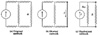
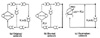

| Previous | Table of Contents | Next |
“Divide and conquer” is a well-known technique to solve complex problems. It requires breaking the complex problem into several smaller subproblems. An example of such a decomposition occurs with electrical circuits, where Norton’s theorem allows any part of the circuit to be replaced by an equivalent current source with a resistance in parallel. For example, Figure 36.2a shows a sample electrical circuit. If we are interested in studying the behavior for various values of resistor R, we can replace the remaining components by a current source whose current capacity is determined by shorting the “designated” resistor R and finding the current through the short circuit. The internal resistance R0 of the current source is determined by the open-circuit voltage. Norton’s theorem states that the current of the designated resistor R in the equivalent circuit is always the same as in the given circuit for all values of R.

FIGURE 36.2 Norton’s theoram for electrical networks.
Chandy, Herzog, and Woo (1975) discovered a similar method for queueing networks. They showed that if a queueing network satisfies certain conditions, it can be decomposed and solved in a manner very similar to that of applying Norton’s theorem.
Consider, for example, the queueing network of Figure 36.3a. If we are interested in studying various alternatives for the ith device, we could replace the remaining network by a flow-equivalent center (FEC) as shown in Figure 36.3c. The FEC is a load-dependent service center, and its service rate µ(j) is a function of the number of jobs j present at this service center. The service rate µ(j) can be determined by short circuiting the ith device and solving the “shorted model” with j jobs circulating in it. The throughput X(j) of the shorted model gives the service rate µ(j). In the equivalent network each job makes Vi visits to the ith device for each visit to the FEC. This is the reason for the link connecting the output of the ith device to its input in Figure 36.3c. Obviously, if Vi = 1, this link is not required. Many books on queueing theory do not explicitly show this link. However, if Vi ≠ 1, the diagram will not correctly represent visit ratios, and the response times of individual devices will not be correctly computed.

FIGURE 36.3 Chandy-Herzog-Woo theorem for queueing networks.
In general, the portion of the network that can be isolated is not limited to a single queue. It can consist of any number of queues and is called the designated subnetwork. The remaining subnetwork is called the aggregate subnetwork. The shorted model is created by setting the service times of all service centers in the designated subnetwork to zero. The aggregate subnetwork can then be replaced by a single FEC to form an equivalent network. For any given number of jobs in the center, the service rate of the FEC is equal to the throughput of the shorted model with that many jobs circulating in the shorted model.
The hierarchical decomposition produces exact results for a large class of networks called BCMP networks, discussed earlier in Section 32.2. It is applicable to open as well as closed networks. However, for simplicity, we will limit our examples here to simple closed queueing networks consisting of fixed-capacity service centers, single classes of jobs, and fixed-transition probabilities that are independent of the state of the system.
Notice that the FEC is a load-dependent service center, and therefore, solution of the equivalent network requires using techniques that can handle such centers. The following theorem ensures that the results obtained for the equivalent network are valid for the original network as well.
Chandy-Herzog-Woo Theorem: The queue length distribution for the designated subnetwork in the equivalent network is the same as in the original network.
To summarize, the Chandy-Herzog-Woo decomposition method consists of the following steps:
| Previous | Table of Contents | Next |
){kind=link}
){kind=link}
){kind=link}
){kind=link}